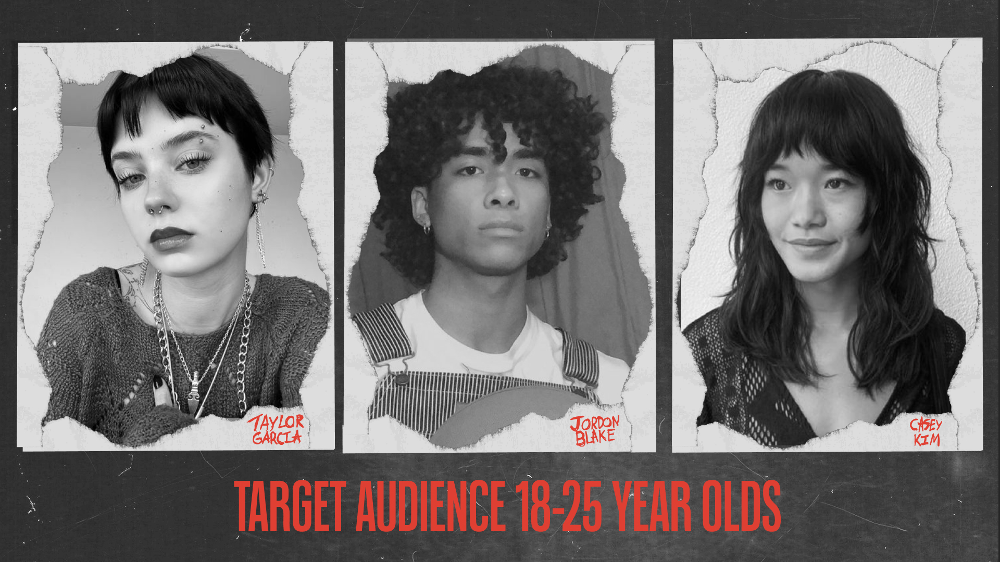
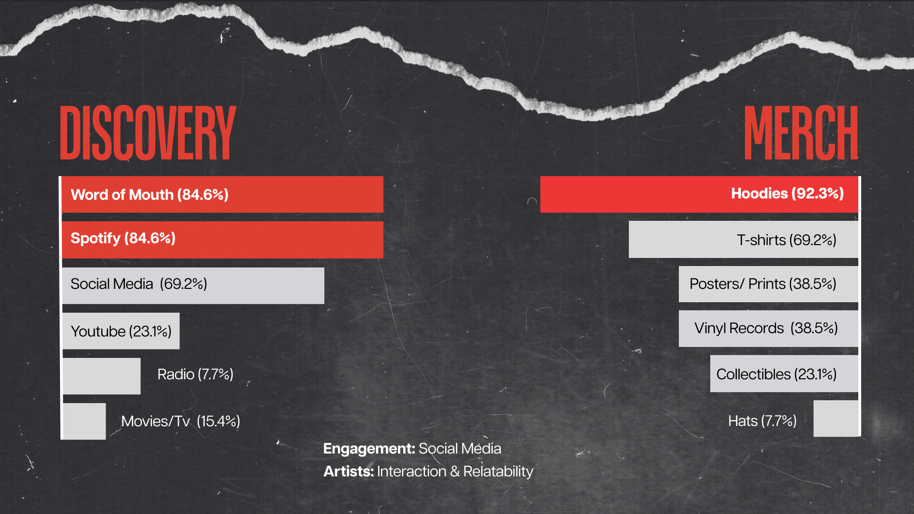
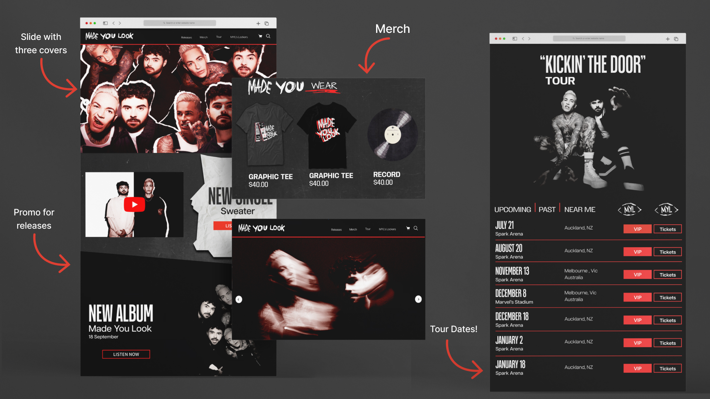
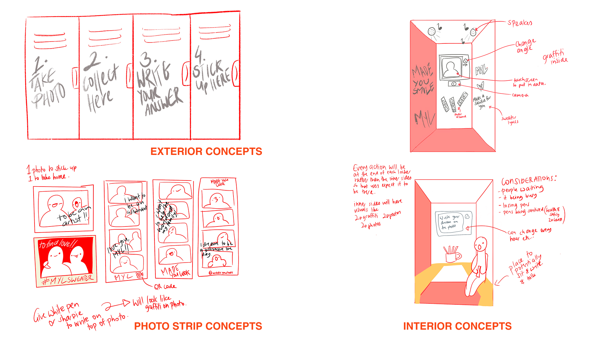
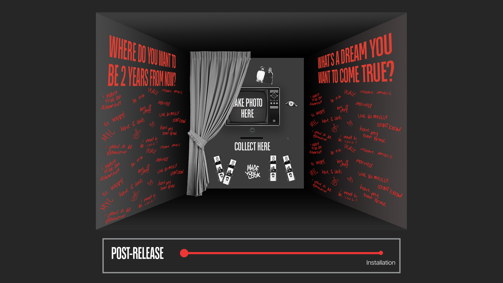

Made You Look
2024
TOOLS
Figma | HTML & CSS | JS
TEAM
Jefritz Espino - Project Manager | UX/UI Designer | Developer
Martina Nunez - UX/UI Designer | Graphic Designer
Mehmet Gultekin - Motion Designer | Team Leader
Nikita Anne Bellew - Graphic Designer | Lead Researcher
SKILLS
Experience Design | Coding | Installation Design | User Testing | UX/UI | User Research | Project Management | Copywriting
BRIEF
For this brief, we worked with Sony Music to create a brand identity and campaign to attract and engage audiences for Made You Look.
SOLUTION
Our objectives were to create branding that is loud, nostalgic and edgy, while creating a campaign that resonated with Made You Look's message to their fans.
CONTRIBUTION
In my role as a project manager, I was in charge of managing the team and project's progress through daily standups and project management tools. As the UX/UI Designer, I carried out user research and user testing as well as co-designing the website. I was also responsible for designing the interactive experience. As part of being the Developer, my responsibility was to develop the website.
USER RESEARCH
User Research was an important part of this project as we are trying to build attraction towards Made You Look's debut album. Therefore, we investigated Made You Look's target audience through self-conducted surveys and interviews to find out what engages fans the most and how we can incorporate this into our project.
  INTERACTIVE EXPERIENCE
Through communication with the client, they provided a short description of how the duo met in a boxing gym and their values as a duo being “to inspire people to chase their dreams.” Combining these two ideas, we created an installation of a locker room photobooth where users can take a photo and answer a prompt to inspire ambitions in their hearts. This can be experienced both physically and, on the website , as they want to reach a target audience of not just New Zealand but also globally.
 USER TESTING
To ensure our prompt matched the Made You Look brand identity, we user tested different
prompts and
found that “Where do you want to be 2 years from now?” invoked the most hopeful feelings, was the
easiest to answer and made people feel wishful.